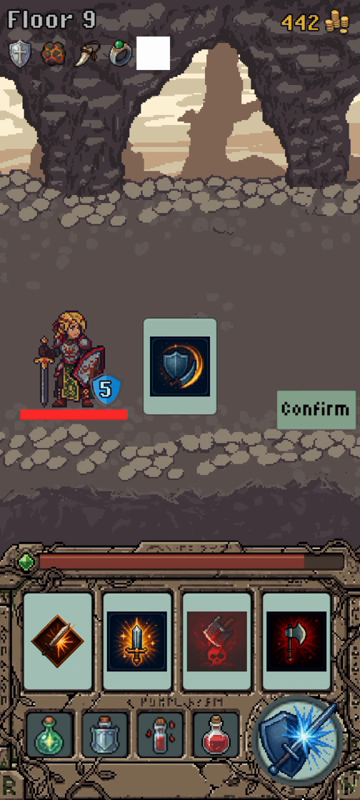
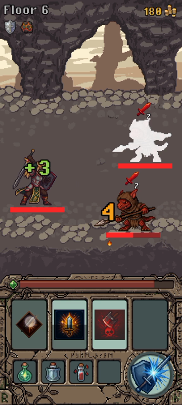

Dungeon Heroes: a mobile action game where you fight through a dungeon with spell cards.
You fight your way down a dungeon in real time, one floor after another. When your hero falls you start again from the top and build the hero differently; games like this are called roguelikes. I've been making it since 2025. The design, the code and the art were mine alone until August 2026, when the AI team I set up joined in. It stands at signed Android release builds, store-ready.
While you cast a spell, you can't defend yourself. The whole fight is built on that one rule.
Your spells are cards. Cast one, and your hero is committed until the spell goes off: no blocking, no parrying.
- Four cards cycle through your hand, so what you can do next is always changing and always visible.
- A cast costs energy, plus the time in which you can't defend, from under half a second for a quick slash to a second and a half for a big heal. So every cast is a small gamble that no attack lands before it's done.
- You defend with a well-timed tap. For the Knight, one of the four heroes, that's the parry. Every enemy shows when it's about to attack; tap at the right moment and you block the hit and gain energy. Miss, and you take the hit.
One attempt at the dungeon is called a run. You clear a floor, pick an upgrade and go down to the next, and somewhere along the way you find a relic, a rare item that changes the rules for the rest of the run. On a phone your eyes are on the enemy, not on your cards, so every enemy shows what it's about to do, and shows it long enough for you to react.

174 spells, 52 status effects and 38 relics can all change a hit, so every hit is worked out in one fixed order.
Every spell, status effect (a lasting condition such as bleeding) and relic can change how much a hit hurts. With this many of them, the usual approach, one "take damage" function with a special case for each, becomes unreadable after a handful.
So a hit goes through a line of stages, always in the same order. It carries one running number, the damage still left; each stage gets its turn to change that number, and any part of the game that needs the final damage just reads it at the end.
A new status effect is one more stage at a known place in the line, not another special case in a tangle of code nobody wants to check.
Saved progress is built to survive updates. A save file the game doesn't fully understand is refused, not guessed at.
When an update changes what a save file holds, old saves have to be converted. Some updates remove upgrades that were bought with the game's own currency, so the conversion refunds them, and it must refund once, not every time the game starts.
So every save carries a version number and moves forward step by step, v1 to v4 so far during development, and each step is tested to be safe to run twice.
A save written by a newer version of the game is refused outright rather than half-read. That happens when someone has the game on two devices and only one has updated: the older game would drop the parts it doesn't know, and its next save would overwrite the real progress.
Bad luck has a limit: open enough chests and the good drop is guaranteed.
Chests drop items by chance, from a table of odds I wrote for each chest type. Items come in rarities, such as Rare and Legendary. To put a limit on bad luck, the game counts the chests you open and guarantees a Rare within 10 and a Legendary within 40; games call this pity. Each chest also advertises one Legendary as its featured item, and when a guaranteed Legendary comes up, a coin flip decides whether it's that one.
A guarantee only raises the worst you can get. Every open is still a roll of the dice, and you can still get lucky above it.
- odds
- a table I wrote, one per chest type
- pity
- a Rare within 10 opens, a Legendary within 40, a Signature (the top rarity) within 200 · the highest guarantee due wins, and it raises the minimum you can get
- featured
- a 50/50 on whether a guaranteed Legendary is the one the chest advertises
- on screen
- the distance to the next guarantee, always: "Legendary in 12"
- saving
- opening a chest spends the key, moves the counter and uses up the guarantee in a single save, or none of it happens
- a phone
- counted
- the Unity editor
- dropped
- a development computer
- dropped
- anything unrecognised
- dropped · treated as a development computer
When I balance the game, runs from my development computer don't count.
The game records how each run went, and a tool I wrote reads those records to tune the numbers. It drops any run recorded in the Unity editor or on a development computer, and counts only runs played on a phone, the way the game is meant to be played.
A developer's test runs at the desk are many, and nothing like a real playthrough, so they would skew every number the tool produces.
Every timing in the fight is a number I can change.
I did the game's art as well as its code, and its characters move through more than five hundred animation clips.
They go through tools I wrote inside the Unity editor: one assembles a character's full set of animations from its sprite sheets (the image files that hold the frames), others check the timings.
The feel of the fight lives in a few named numbers: how long a cast holds you in place, how long an enemy signals its attack, how long you have to parry.
So when the parry feels too easy, there is a number to change rather than a feeling to argue about.
The game is in English and Spanish, and its privacy policy, data-deletion page and release procedure are written.

by hand · 2025 to August 2026
- damage stages
- parry timing
- balance tool
- save format through v3
with the AI team · since August 2026
- the shop you visit between runs
- chest keys sorted by type, and the save conversion from v3 to v4
- relic reworks
- latest round of work on the combat screen
stays with me, on purpose
- the design: agents propose, I decide
- how it feels on a device
- the final say on what goes in
The AI team's manager reads and tests every change before it goes into the game, and the costly ones wait for me. How the AI team works is its own page.